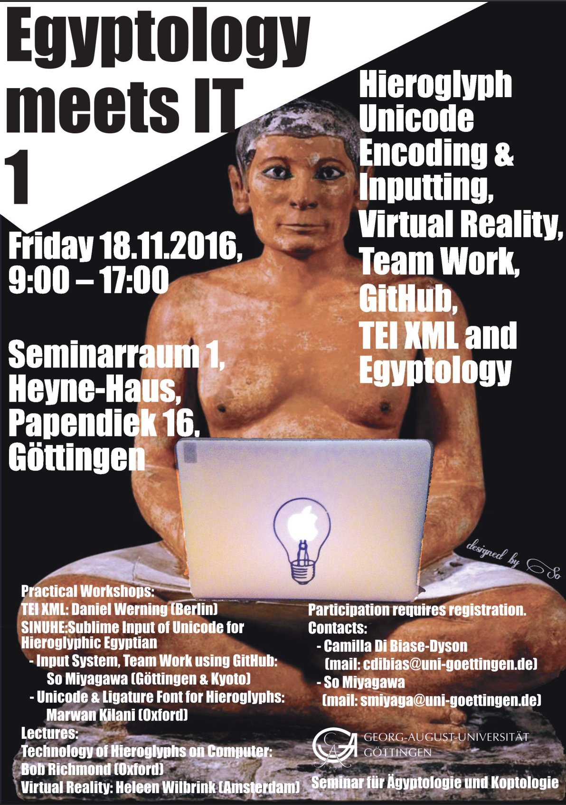

AI Applications in Egyptology
Current Applications and Future Possibilities

University of Tsukuba / 筑波大学
So Miyagawa / 宮川創
Presentation Overview
Part I
Genesis of Digital Egyptology
Part II
Current AI Applications
Part III
Ethical Considerations
"Exploring the Intersection of Ancient Studies and Modern Technology"
Why AI Meets Ancient Egypt
- Scale of Data: Millions of hieroglyphic signs
- Complexity: Pattern recognition beyond human capacity
- Engagement: Global accessibility through technology
- Innovation: Interdisciplinary breakthroughs
[Data Visualization]
The Egyptological Challenge
Hundreds
of Hieroglyphic Signs
Millions
of Artifacts & Texts
[Egyptian Artifacts Collage]
Genesis: The Digital Foundation
1897
Erman's Lexicon begins
1984
Manuel de Codage standard
1990s
Digital corpora emerge
2000s
Online multimodal platforms
2020s
AI applications begin
Thesaurus Linguae Aegyptiae
The Foundation
- Millions of lemmatized tokens
- Hieroglyphic, Hieratic, Demotic, Coptic
- Morphological annotations
- API for AI training
"An important resource for Egyptological NLP research"
The Giza Project
[Giza 3D Visualization]
Archives
Millions of photos & documents
3D Models
Photorealistic reconstructions
Education
Giza@School modules
Manuel de Codage: The Digital Rosetta
[Encoding Example]
Why It Matters
- Standardized hieroglyph encoding
- ASCII representation system
- Foundation for digital processing
- Enables AI text analysis
Early Digital Challenges
Technical Barriers
- Limited computing power
- Fragmented databases
- Lack of standards
Human Factors
- Programming skills gap
- Funding scarcity
- Interdisciplinary divide
[Early Computer Systems]
The Current AI Applications
[AI Network Visualization]
"Exploring Machine Learning Applications"
Four Pillars of AI Egyptology
Scripts
Hieroglyph recognition & translation
Artifacts
Classification & reconstruction
Sites
Discovery & mapping
Engagement
VR/AR experiences
Google's Fabricius
[Fabricius Interface]
Features
- CNN-based sign recognition
- Workbench for researchers
- Interactive learning mode
- Gardiner code support
Good
Performance on Clear Signs
Digital Pyramid Texts Project
Brown University Innovation
- Hundreds of thousands of hieroglyphic signs
- Advanced NLP queries
- Context-based search
- Open-source platform
[Query Interface]
"Improving access to earliest religious texts"
THOTH AI: Experimental Platform
[THOTH AI Interface Demo]
Developer: Prof. So Miyagawa, University of Tsukuba
Technology: Claude 3.5 Sonnet with RAG Implementation
Millennia of Written History
| Language Phase |
Period |
Writing System |
| Proto-Egyptian |
Early Dynastic |
Proto-Egyptian script |
| Old Egyptian |
Old Kingdom |
Hieroglyphic/Hieratic |
| Middle Egyptian |
Classical Period |
Hieroglyphic/Hieratic |
| Late Egyptian |
New Kingdom onwards |
Hieroglyphic/Hieratic |
| Demotic |
Late Period |
Demotic script |
| Coptic |
Christian Era to Present |
Coptic alphabet |
The world's longest continuous written tradition
Challenges in Ancient Egyptian NLP
Low-Resource Issues
- Limited digital corpora
- Lack of large-scale datasets
- Incomplete Unicode support
- Font and input constraints
- Specialist knowledge required
Script Complexity
- Hieroglyphic signs: hundreds
- Phonetic + Logographic
- Multiple writing directions
- No vowel notation
- Roman transliteration needed
RAG approach helps address some knowledge gaps using specialized dictionaries
RAG-Enhanced Learning System
Traditional LLM Problems
- Insufficient training data
- Lack of specialized knowledge
- Frequent mistranslations
- Context loss
RAG Solutions
- Dynamic dictionary lookup
- Corpus-based retrieval
- Expert knowledge integration
- Improved accuracy
[RAG Pipeline Diagram]
Key Digital Resources
Coptic SCRIPTORIUM
- Digital Coptic corpus
- Grammatically tagged texts
- Open-source project
- GitHub repository
- Millions of annotated tokens
TLA (Berlin)
- Comprehensive lexicon
- All Egyptian phases
- TEI/XML format
- Millions of lemmatized tokens
- API access available
Integrated as Dify Knowledge bases for automatic retrieval
LLM Performance Comparison
| Model |
Performance Level |
Translation Quality |
Overall Assessment |
| THOTH AI (RAG) |
Good |
Improved |
Better Performance |
| Claude 3.5 Sonnet |
Good |
Reasonable |
Solid Baseline |
| Gemini 2.0 Pro |
Moderate |
Acceptable |
Adequate |
| GPT-4o |
Limited |
Basic |
Needs Improvement |
RAG enhancement provides measurable improvements over base models
THOTH AI System Workflow
1. Input
- Roman transliteration
- Coptic text
- Photo upload + OCR
2. Processing
- Vector search
- Dictionary retrieval
- Context integration
3. Output
- Translation
- Grammar analysis
- Cultural notes
Access: https://somiyagawa.com/thoth
Supporting Coptic Language Revival
Claude 3's Performance
- Competent Coptic translation
- Documented in recent studies
- Wannaz & Miyagawa (2024)
- Saeed et al. (2024)
Revival Applications
- Liturgical text support
- Music generation (SUNO AI)
- Educational materials
- Community engagement
[Coptic Revival Activities]
THOTH AI Capabilities
Multi-Script
Hieroglyphic to Coptic
Translation
Context-aware output
Education
Interactive lessons
Multilingual
English, Japanese, Arabic
"Working toward bridging Egyptian language phases in one interface"
THOTH AI Public Impact
[User Statistics Graph - January 2025 onwards]
Computer Vision in Artifact Analysis
Computer Vision Applications
- Artifact classification
- Period identification
- Style analysis
- Fragment reconstruction
[Artifact Recognition Demo]
Moderate
Dynasty Classification Performance
Computer-Assisted Site Discovery
[Satellite Analysis Visualization]
Peru
Thousands of new geoglyphs
UAE
Ancient settlements discovered
Egypt
Delta tell sites mapped
LiDAR & Drone Surveying
[LiDAR Point Cloud]
Capabilities
- Micro-relief detection
- Buried structure mapping
- Vegetation penetration
- Computer-assisted segmentation
Virtual Reality Egyptology
[VR Experience Screenshot]
"Digital documentation helps preserve heritage while expanding access"
Grand Egyptian Museum Technology
Digital Features
- AR experiences
- Object information apps
- Digital overlays
- Interactive displays
[GEM AR Experience]
Leading AI Egyptology Projects
| Project |
Institution |
Technology |
Impact |
| Fabricius |
Google |
CNN/ML |
Accessible learning tool |
| THOTH AI |
Tsukuba |
LLM+RAG |
Multi-script support |
| Giza 3D |
Harvard |
Photogrammetry |
Digital documentation |
| Pyramid Texts |
Brown |
NLP |
Corpus searchability |
Navigating Ethical Challenges
[Ethics Framework Diagram]
Bias
Authenticity
Ownership
Transparency
Addressing Algorithmic Bias
Sources
- Training data imbalance
- Cultural stereotypes
- Colonial perspectives
Solutions
- Diverse datasets
- Ethics audits
- Collaborative curation
[Bias Mitigation Process]
Decolonizing AI in Egyptology
"Supporting Egyptian-Led Research and Development"
Local Involvement
Egyptian institutions participating
Data Management
Heritage data considerations
Collaboration
International partnerships
[Collaborative Network Map]
Explainable AI (XAI)
[XAI Visualization]
Requirements
- Model interpretability
- Decision transparency
- Dataset provenance
- Confidence scoring
"Working toward more transparent AI systems"
Future Horizons
[Futuristic Egypt Visualization]
"Exploring potential applications of AI in Egyptological research"
Modeling Ancient Systems
Computational Models
- Economic simulations
- Social network analysis
- Environmental modeling
- Hypothesis testing
[Simulation Visualization]
Next-Gen Language Models
Potential Future Models
- Larger training datasets
- Multimodal approaches
- Context-aware systems
- Improved gap filling
[Model Architecture]
Egypt's AI Research Initiatives
"Building Egypt's AI Capabilities in Heritage Studies"
Egyptian Leadership in AI
| Institution |
Initiative |
Focus |
| GEM |
Museum AI Suite |
Visitor experience |
"Egyptian institutions developing their technological capabilities"
Empowering Egypt's Digital Future
AI Development Continues to Progress
🚀 Training Programs
Skill development initiatives
🌍 Partnerships
International collaboration
💡 Research Centers
Academic initiatives
🎯 Development
Building capabilities
Charting the Path Forward
Data Sharing
Open standards & repositories
Ethics First
Guidelines & review boards
Education
Interdisciplinary programs
Collaboration
Global-local partnerships
The Future is Collaborative
AI as a Research Tool
"The expertise and critical thinking of Egyptologists
remain essential for meaningful interpretation of the past"
[Human-AI Collaboration]
Thank You
[Closing Visual]
Questions & Discussion
Contact: [Your Email]
Resources: [Your Website]
#AIEgyptology #DigitalHeritage #FutureOfArchaeology